Standardized Testing
This section focuses on differentiating the good study books from the rest and points out some misconceptions about standardized tests. A few quick tips, though, for your standardized tests:
- Take your standardized tests early, ideally at the beginning of Junior year or end of Sophomore year, so that you have time to study and retake.
- Try both the ACT and SAT as scores can sometimes be drastically different between the two tests based on the individual.
- Don’t neglect subject tests; be prepared to take them at the end of Junior year at the latest.
- One of the best ways to practice for Standardized Tests is through practice testing. Take multiple practice tests and carefully go over the answers you get wrong (and right because you don't know if it was luck or for the wrong reasons).
Study Book Recommendations:
SAT:
General SAT Study Book:
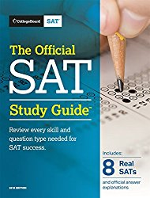
Amazon Link To 'The Official SAT Study Guide, 2018 Edition (Official Study Guide for the New Sat)'
SAT Math Book:
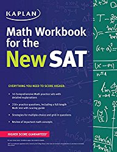
Amazon Link To 'Kaplan Math Workbook for the New SAT (Kaplan Test Prep)'
SAT Reading Book:
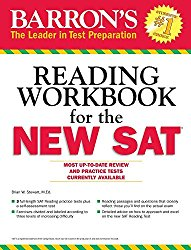
Amazon Link To 'Barron's Reading Workbook for the NEW SAT (Critical Reading Workbook for the Sat) 1st Edition'
More Expensive SAT Reading Book But More Thorough:
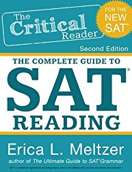
Amazon Link to 'The Critical Reader, 2nd Edition 2nd Edition'
SAT Writing Book:
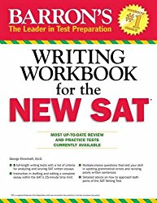
Amazon Link to 'Barron's Writing Workbook for the NEW SAT, 4th Edition 4th Edition'
More Expensive SAT Writing Book But More Thorough:
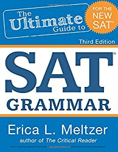
Amazon Link to '3rd Edition, The Ultimate Guide to SAT Grammar 3rd Edition'
ACT:
General ACT Study Book (better if aiming for a score lower than 30):
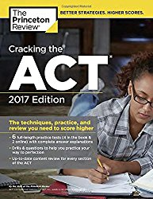
Amazon Link to 'Cracking the ACT with 6 Practice Tests, 2017 Edition: The Techniques, Practice, and Review You Need to Score Higher (College Test Preparation)'
General ACT Study Book (better if aiming for a score above 30):
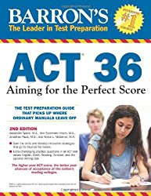
Amazon Link to 'Barron's ACT 36, 2nd Edition: Aiming for the Perfect Score 2nd Edition'
General ACT Study Book- has the best practice tests (official practice tests):
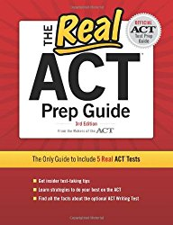
Amazon Link to 'The Real ACT, 3rd Edition (Real ACT Prep Guide) 3rd Edition'
I'd recommend buying this book along with either the Princeton Review or Barron's depending on what score you are going for. This book is made by the official ACT test makers and the practice tests are real ACT tests. Don't bother with the newer version of this book, though, as it adds very little and is much more expensive.
ACT Math Book:
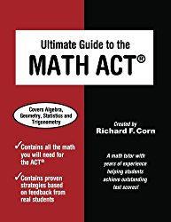
Amazon Link to 'Ultimate Guide to the Math ACT'
ACT Reading Book:
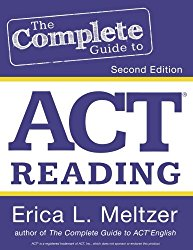
Amazon Link to 'The Complete Guide to ACT Reading, 2nd Edition Second Edition'
Cheaper ACT Reading Book (less thorough and focused on short daily practice):
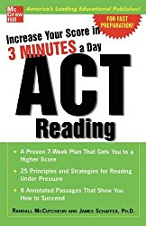
Amazon Link to 'Increase Your Score In 3 Minutes A Day: ACT Reading (Test Prep) 1st Edition'
ACT English Book:
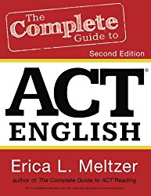
Amazon Link to 'The Complete Guide to ACT English, 2nd Edition Second Edition'
ACT Science Book:
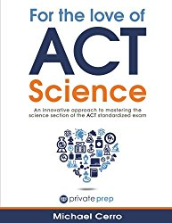
Amazon Link to 'For the Love of ACT Science: An innovative approach to mastering the science section of the ACT standardized exam'
Cheaper ACT Science Book (less thorough):
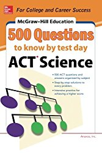
Amazon Link to '500 ACT Science Questions to Know by Test Day (Mcgraw Hill's 500 Questions to Know By Test Day) 1st Edition'
Calculators
Something as arbitrary as bringing an unapproved calculator can get your ACT/SAT score cancelled, so be sure to check the calculator policies for both tests.
SAT: https://collegereadiness.collegeboard.org/sat/taking-the-test/calculator-policy
ACT: http://www.act.org/content/dam/act/unsecured/documents/ACT-calculator-policy.pdf
Highly Rated Standard Function Calculator:
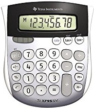Amazon Link to ‘Texas Instruments TI-1795 SV Standard Function Calculator'While on the subject of calculators, I recommend buying a good calculator for school as well. The Ti-nSpire is a great investment as it makes courses like AP Stat or AP Calc more manageable.
The nSpire has some more useful functions and a more useful interface than its predecessors (Ti-89 etc).
One thing to be aware of is that CAS (computer algebra system) calculators are only allowed to be used on the SAT and not the ACT.
That being said, the Ti-nspire CX CAS Graphing Calculator is the newest calculator and has the most functional capabilities; the CAS can be incredibly useful for everyday math class.
nspire CX CAS:
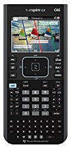 Amazon Link to 'Texas Instruments Nspire CX CAS Graphing Calculator'The non- CAS nspire is the one I used through high school and is a great option as well (you also can use it for standardized tests).
CX version (has color):
Amazon Link to ‘Texas Instruments TI-Nspire CX Graphing Calculator’Non- CX version (cheaper):
Amazon Link to ‘Texas Instruments TI-NSpire Math and Science Handheld Graphing Calculator’Is The SAT Preferred Over The ACT? I See Ivies Accept More Students Who Take The SAT!
No. The SAT is more popular on the East Coast and more kids from the East Coast apply to the Ivy League schools.
Schools With All Scores Policies
This is something I see students fretting about far more than they should. University of Pennsylvania, Stanford, Yale and several other schools require all test scores to be submitted while Cornell requires all SAT tests but not ACT. You can look up the score policies of the colleges you are considering.
Do not let this deter you from applying to a school.
Even if you have an abysmally low test score, it will only show diligence and motivation for you to have raised it. After all, raw intelligence rarely trumps diligence and a strong work ethic. These schools understand that students are not perfect. Don’t take any standardized tests for fun or not seriously and don’t take a content-based subject test without studying at all (Bio, Chem, Physics, etc), but do not let a suboptimal first SAT score deter you from applying to these schools either.
The ‘Once You Hit A Certain Score It Doesn’t Matter’ Myth
It can be comforting to believe that every test score above "X" is equal (X is sometimes around a 1400 SAT or 30 ACT). What is really meant by that is that at "X" your score will probably get you considered (depending on the school of course).
Improving your standardized test score continues to strengthen your application and chances no matter where you are at.
That being said, a 10-50 point increase on the SAT or 1 point increase on the ACT, is not going to change your chances dramatically. So, if you do get a score only one point off perfect for you then work on strengthening the other parts of your application rather than grinding for a very small advantage.
Allocate your time efficiently.
Don’t fall into the trap of ‘every score above "X" is the same,’ because it is not. Know when, though, to stop trying to increase your score.
If your score is near perfect, you have already studied a significant amount, or you have taken the standardized test 3+ times, then you should be spending time strengthening the other parts of your application.
Don’t get hung up on your test score. Do your best and understand where that situates you, but be optimistic; after all, most students won’t know all of these intangibles and nuances like you will.